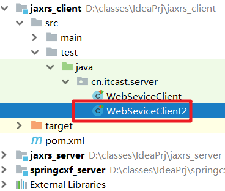
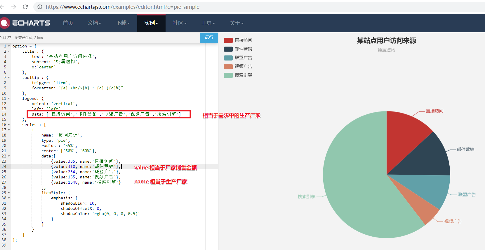
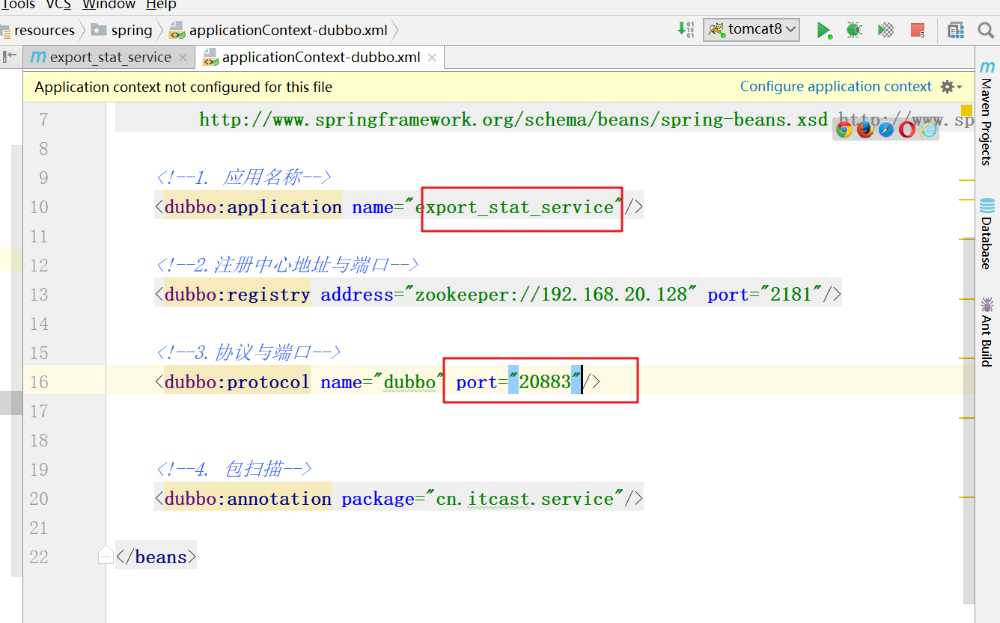

学习目标
1、能够理解Webservice的定义
2、能够完成CXF与Spring整合开发
3、能够引入海关报运平台的WebService
4、能够使用WebClient调用海关报运平台的WebService
5、理解并熟练使用Echarts
6、独立完成厂家销售统计
1. Webservice介绍
概述
WebService是一种==跨编程语言和跨操作系统平台的远程调用（RPC）技术==。所谓跨编程语言和跨操作平台，就是说服务端程序采用java编写，客户端程序则可以采用其他编程语言编写，反之亦然！跨操作系统平台则是指服务端程序和客户端程序可以在不同的操作系统上运行。 http协议
在工作中我们一般同一个公司里面的RPC调用我们一般使用dubbo，如果不同公司不同系统我们一般使用webService。
应用场景(异构系统 两家公司的系统)
比如： 气象局监测天气变化，做成一个功能提供给外界访问（网址），谁要用这个功能直接调用就可以了。
webservice的三个规范
JAVA 中共有三种WebService 规范，分别是JAX-WS、JAX-RS、JAXM&SAAJ(废弃)。
JAX-WS规范
JAX-WS 的全称为Java API for XML-Based Webservices ，早期的基于SOAP 的JAVA 的Web 服务规范JAX-RPC(Java API For XML-Remote Procedure Call)目前已经被JAX-WS 规范取代。从java5开始支持JAX-WS2.0版本，Jdk1.6.0_13以后的版本支持2.1版本，jdk1.7支持2.2版本。
采用标准SOAP(Simple Object Access Protocol) 协议传输，soap属于w3c标准。Soap协议是基于http的应用层协议，soap协议传输是xml数据。
采用wsdl作为描述语言即webservice使用说明书，wsdl属w3c标准。xml是webservice的跨平台的基础，XML主要的优点在于它既与平台无关，又与厂商无关。
XSD，W3C为webservice制定了一套传输数据类型，使用xml进行描述，即XSD(XML Schema Datatypes)，任何编程语言写的webservice接口在发送数据时都要转换成webservice标准的XSD发送。
客户端与服务端通讯： soap协议 = http+ xml
JAX-RS规范 注意：这个规范会遵守restful风格
JAX-RS 是JAVA 针对REST(Representation State Transfer)风格制定的一套Web 服务规范，由于推出的较晚，该规范（JSR 311，目前JAX-RS 的版本为1.0）并未随JDK1.6 一起发行。
支持JAX-RS服务规范的框架有：
CXF——XFire和Celtix的合并（一个由IONA赞助的开源ESB，最初寄存在ObjectWeb上）。
Jersey——Sun公司的JAX-RS参考实现。
RESTEasy——JBoss的JAX-RS项目。
Restlet——也许是最早的REST框架了，它JAX-RS之前就有了。
注：REST 是一种软件架构模式，只是一种风格，rest服务采用HTTP 做传输协议。
客户端与服务端通讯： http协议 + XML/JSON
==restful 风格：==
作用： 简化url书写格式
核心思想： 统一的url路径，然后根据==用户提交的不同的请求方式==区分用户的行为。
在使用RESTful之前（传统方式的URL）
增加： http://localhost:8080/user?action=add
修改： http://localhost:8080/user?action=update
删除： http://localhost:8080/user?action=delete
查询： http://localhost:8080/user?action=find
使用RESTFul之后 （GET、POST、PUT、DELETE）
增加： http://localhost:8080/user method=post
修改： http://localhost:8080/user method=put
删除： http://localhost:8080/user method=delete
查询： http://localhost:8080/user/1 method = get
小结
restFul风格增删改查分别使用哪种的请求方式?
- 增加 post
- 查询 get
- 删除 delete
- 修改 put 2. Apache的CXF框架
什么是CXF?
Apache CXF = Celtix + Xfire，开始叫 Apache CeltiXfire，后来更名为 Apache CXF 了，以下简称为 CXF。Apache CXF 是一个开源的 web Services 框架，CXF 帮助您构建和开发 web Services ，它支持多种协议，比如：SOAP1.1,1,2 XML/HTTP、RESTful 或者CORBA。
RESTful: 一种风格而不是一个协议。它理念是网络上的所有事物都被抽象为资源，每个资源对应一个唯一的资源标识符。
Cxf是基于SOA总线结构，依靠spring完成模块的集成，实现SOA方式。灵活的部署: 可以运行在Tomcat,Jboss,Jetty(内置),weblogic上面
官方网址
3. JAX-RS 进行webservice开发（一）概述
概述
jax-rs规范，就是基于restful风格的webservice开发支持。全程：Java API for XML-Based Rest
JAX-RS是一个Java编程语言接口，被设计用来简化使用REST架构的应用程序的开发。
JAX-RS API使用Java编程语言的注解来简化RESTful web service的开发。
开发人员使用JAX-RS的注解修饰Java编程语言的类文件来定义资源和能够应用在资源上的行为。JAX-RS的注解是运行时的注解，因此运行时的映射会为资源生成辅助类和其他的辅助文件。包含JAX-RS资源类的Java EE应用程序中资源是被配置好的，辅助类和辅助文件是生成的，资源通过被发布到JavaEE服务器上来公开给客户端。
下表列出了JAX-RS定义的一些Java注解以及怎样使用它们的简要的描述。
| 注解 | 描述 |
|---|---|
| @Path | @Path注解的值是一个相对的URI路径，这个路径指定了该Java类的位置，例如/helloworld。在这个URI中可以包含变量，例如可以获取用户的姓名然后作为参数传入URI中：/helloworld/{username}。 |
| @GET | @GET注解是请求方法指示符，这个指示符注解的Java方法会处理HTTPGET请求。资源的行为由资源回应的HTTP方法决定。 |
| @POST | @POST注解是请求方法指示符，这个指示符注解的Java方法会处理HTTPPOST请求。资源的行为由资源回应的HTTP方法决定。 |
| @PUT | @PUT注解是请求方法指示符，这个指示符注解的Java方法会处理HTTPPUT请求。资源的行为由资源回应的HTTP方法决定。 |
| @DELETE | @DELETE注解是请求方法指示符，这个指示符注解的Java方法会处理HTTPDELETE请求。资源的行为由资源回应的HTTP方法决定。 |
| @HEAD | @HEAD注解是请求方法指示符，这个指示符注解的Java方法会处理HTTPHEAD请求。资源的行为由资源回应的HTTP方法决定。 |
| @PathParam | @PathParam注解是可以抽取并用在资源类中的一类参数。URIpath参数是从请求的URI中抽取的，而且参数的名称和@Path注解中定义的变量名对应。 |
| @QueryParam | @QueryParam注解是可以抽取并在资源类中使用的一类参数。Query参数是从请求URI的查询参数中抽取的。 |
| @Consumes | @Consumes注解是用来指定资源能够接受的客户发送的MIME媒体类型。 |
| @Produces | @Produces注解用来指定资源能够生成并发送给客户端的MIME媒体类型，例如“text/plain”. |
| @Provider | @Provider注解用在任何对JAX-RS运行时（如MessageBodyReader和MessageBodyWriter）有意义的事物上。对HTTP请求，MessageBodyReader用来将HTTP请求实体段映射为方法参数。在响应的时候，返回的值使用MessageBodyWriter来映射成HTTP响应实体段。如果应用程序需要提供其他的元数据，如HTTP头或不同的状态代码，方法可以返回一个打包了实体的Response，该Response可以使用Response.ResponseBuilder创建。 |
4. JAX-RS 进行webservice开发（二）创建服务端项目
目标
创建服务端项目，发布服务
步骤
- 创建项目：jaxrs_server
- 添加依赖
- 引入实体类
- 引入service接口、实现
- 启动服务
实现
创建项目：jaxrs_server
添加依赖
<?xml version="1.0" encoding="UTF-8"?> <project xmlns="http://maven.apache.org/POM/4.0.0" xmlns:xsi="http://www.w3.org/2001/XMLSchema-instance" xsi:schemaLocation="http://maven.apache.org/POM/4.0.0 http://maven.apache.org/xsd/maven-4.0.0.xsd"> <modelVersion>4.0.0</modelVersion> <groupId>cn.itcast</groupId> <artifactId>jaxrs_server</artifactId> <version>1.0-SNAPSHOT</version> <dependencies> <dependency> <groupId>org.apache.cxf</groupId> <artifactId>cxf-rt-frontend-jaxrs</artifactId> <version>3.0.1</version> </dependency> <dependency> <groupId>org.apache.cxf</groupId> <artifactId>cxf-rt-transports-http-jetty</artifactId> <version>3.0.1</version> </dependency> <dependency> <groupId>org.slf4j</groupId> <artifactId>slf4j-log4j12</artifactId> <version>1.7.12</version> </dependency> <dependency> <groupId>org.apache.cxf</groupId> <artifactId>cxf-rt-rs-client</artifactId> <version>3.0.1</version> </dependency> <dependency> <groupId>org.apache.cxf</groupId> <artifactId>cxf-rt-rs-extension-providers</artifactId> <version>3.0.1</version> </dependency> <dependency> <groupId>org.codehaus.jettison</groupId> <artifactId>jettison</artifactId> <version>1.3.7</version> </dependency> <dependency> <groupId>junit</groupId> <artifactId>junit</artifactId> <version>4.12</version> <scope>test</scope> </dependency> </dependencies> </project>引入实体类
在实体上必须加上注解
- 引入service接口、实现
package cn.itcast.service;
import java.util.List;
import javax.ws.rs.Consumes;
import javax.ws.rs.DELETE;
import javax.ws.rs.GET;
import javax.ws.rs.POST;
import javax.ws.rs.PUT;
import javax.ws.rs.Path;
import javax.ws.rs.PathParam;
import javax.ws.rs.Produces;
import cn.itcast.domain.User;
@Path("/userService") //@Path用于配置路径的
public interface IUserService {
@POST //添加，指定的是请求方式
@Path("/user") //@Path用于配置路径的
@Consumes({"application/json","application/xml"}) //@Consumes 代表服务端能够接收数据类型
public void saveUser(User user);
@PUT //更新,
@Path("/user") //@Path用于配置路径的
@Consumes({"application/json","application/xml"}) //@Consumes 代表服务端能够接收数据类型 ，
public void updateUser(User user);
@GET
@Path("/user")
@Produces({"application/json","application/xml"}) //@Produces 服务端能够提供给客户端的数据格式
public List<User> findAllUsers();
@GET
@Path("/user/{id}") //参数占位符是{参数的名字}
@Produces({"application/json","application/xml"})//@Produces 服务端能够提供给客户端的数据格式
public User finUserById(@PathParam("id") Integer id); //@PathParam 获取参数的值给形式参数
@DELETE
@Path("/user/{id}") //参数占位符是{参数的名字}
public void deleteUser(@PathParam("id") Integer id);
}
启动服务
package cn.itcast.server; import cn.itcast.service.UserServiceImpl; import org.apache.cxf.interceptor.LoggingInInterceptor; import org.apache.cxf.interceptor.LoggingOutInterceptor; import org.apache.cxf.jaxrs.JAXRSServerFactoryBean; public class JAXRSServer { public static void main(String[] args) { //1. 创建webService的服务工厂 JAXRSServerFactoryBean factoryBean = new JAXRSServerFactoryBean(); //2. 设置访问的url factoryBean.setAddress("http://localhost:9090"); //3. 暴露服务的实现类给外界去访问 factoryBean.setServiceBean(new UserServiceImpl()); //4. 添加日志(不是必须，如果你想日志你添加) factoryBean.getInInterceptors().add(new LoggingInInterceptor()); //输入日志： 记录客户端给服务端传输的数据 factoryBean.getOutInterceptors().add(new LoggingOutInterceptor()); //输出日志： 记录服务端响应给客户端的记录。 //5. 开启服务 factoryBean.create(); } }测试
现在只做简单的访问测试，后面写完客户端再做最终测试：
小结
- webService服务端使用的注解
- @Path 设置访问路径
- @POST @GET @DELETE @PUT 设置请求方式, 浏览器直接访问方式是get请求- @consumers 指定服务端能够接收的数据格式，application/json , application/xml
- @Produces 服务端响应给客户端的数据格式，application/json , application/xml
- @Path 设置访问路径
5. JAX-RS 进行webservice开发（三）创建客户端项目
目标
创建客户端项目，调用服务端发布的服务。
步骤
- 创建项目: jaxrs_client
- 添加依赖（同服务端项目）
- 编写实体类（同服务端项目）
- 编写测试类
实现
创建项目: jaxrs_client
添加依赖（同服务端项目）
编写实体类（同服务端项目）
编写测试类
package cn.itcast.clienttest; import cn.itcast.domain.User; import org.apache.cxf.jaxrs.client.WebClient; import org.junit.Test; import java.util.Collection; public class WebServiceTest { //测试插入 @Test public void testSave(){ User user =new User(); user.setId(10); user.setUsername("李成硕"); user.setCity("安康"); //type方法： 指定发给给服务端使用的数据类型 WebClient.create("http://localhost:9090/userService/user").type("application/json").post(user); } //测试更新 @Test public void testUpdate(){ User user =new User(); user.setId(20); user.setUsername("马安"); user.setCity("贵州"); //type方法： 指定发给给服务端使用的数据类型 WebClient.create("http://localhost:9090/userService/user").type("application/json").put(user); } //查询所有 @Test public void testFindAll(){ //accpet() 客户端接受的格式 Collection<? extends User> collection = WebClient.create("http://localhost:9090/userService/user").accept("application/json").getCollection(User.class); System.out.println("用户对象："+collection); } //查询所有 @Test public void testFindById(){ //accpet() 客户端接受的格式 User user = WebClient.create("http://localhost:9090/userService/user/1").accept("application/json").get(User.class); System.out.println("用户对象："+user); } //查询所有 @Test public void testDelete(){ //accpet() 客户端接受的格式 WebClient.create("http://localhost:9090/userService/user/1").delete(); } }
小结
webservice的客户端使用那个核心类？核心方法有哪些？
核心类：WebClient
核心方法： post，put，get，getCollection,delete
6. Spring整合CXF发布服务
目标
实现Spring整合CXF发布服务。
步骤
- 创建web项目：springcxf_server
- 添加依赖
- 引入实体类
- 引入服务接口、实现
- 配置web.xml
- 配置applicationContext-cxf.xml
- 启动项目，发布服务
实现
创建web项目：springcxf_server , 并且转换为web项目
添加依赖
<?xml version="1.0" encoding="UTF-8"?> <project xmlns="http://maven.apache.org/POM/4.0.0" xmlns:xsi="http://www.w3.org/2001/XMLSchema-instance" xsi:schemaLocation="http://maven.apache.org/POM/4.0.0 http://maven.apache.org/xsd/maven-4.0.0.xsd"> <modelVersion>4.0.0</modelVersion> <groupId>cn.itcast</groupId> <artifactId>springcxf_server</artifactId> <version>1.0-SNAPSHOT</version> <packaging>war</packaging> <dependencies> <!-- cxf 进行rs开发 必须导入 --> <dependency> <groupId>org.apache.cxf</groupId> <artifactId>cxf-rt-frontend-jaxrs</artifactId> <version>3.0.1</version> </dependency> <!-- 日志引入 --> <dependency> <groupId>org.slf4j</groupId> <artifactId>slf4j-log4j12</artifactId> <version>1.7.12</version> </dependency> <!-- 客户端 --> <dependency> <groupId>org.apache.cxf</groupId> <artifactId>cxf-rt-rs-client</artifactId> <version>3.0.1</version> </dependency> <!-- 扩展json提供者 --> <dependency> <groupId>org.apache.cxf</groupId> <artifactId>cxf-rt-rs-extension-providers</artifactId> <version>3.0.1</version> </dependency> <!-- 转换json工具包，被extension providers 依赖 --> <dependency> <groupId>org.codehaus.jettison</groupId> <artifactId>jettison</artifactId> <version>1.3.7</version> </dependency> <!-- spring 核心 --> <dependency> <groupId>org.springframework</groupId> <artifactId>spring-context</artifactId> <version>4.2.4.RELEASE</version> </dependency> <!-- spring web集成 --> <dependency> <groupId>org.springframework</groupId> <artifactId>spring-web</artifactId> <version>4.2.4.RELEASE</version> </dependency> <!-- spring 整合junit --> <dependency> <groupId>org.springframework</groupId> <artifactId>spring-test</artifactId> <version>4.2.4.RELEASE</version> </dependency> <!-- junit 开发包 --> <dependency> <groupId>junit</groupId> <artifactId>junit</artifactId> <version>4.12</version> </dependency> </dependencies> </project>引入实体类
引入服务接口、实现
==删除服务接口的类名上面path路径，因为等会需要在核心配置文件中配置==
package cn.itcast.service; import cn.itcast.domain.User; import javax.ws.rs.*; import java.util.List; public interface IUserService { @POST //添加，指定的是请求方式 @Path("/user") //@Path用于配置路径的 @Consumes({"application/json","application/xml"}) //@Consumes 代表服务端能够接收数据类型 public void saveUser(User user); @PUT //更新, @Path("/user") //@Path用于配置路径的 @Consumes({"application/json","application/xml"}) //@Consumes 代表服务端能够接收数据类型 ， public void updateUser(User user); @GET @Path("/user") @Produces({"application/json","application/xml"}) //@Produces 服务端能够提供给客户端的数据格式 public List<User> findAllUsers(); @GET @Path("/user/{id}") //参数占位符是{参数的名字} @Produces({"application/json","application/xml"})//@Produces 服务端能够提供给客户端的数据格式 public User finUserById(@PathParam("id") Integer id); //@PathParam 获取参数的值给形式参数 @DELETE @Path("/user/{id}") //参数占位符是{参数的名字} public void deleteUser(@PathParam("id") Integer id); }
配置web.xml
<?xml version="1.0" encoding="UTF-8"?> <web-app xmlns:xsi="http://www.w3.org/2001/XMLSchema-instance" xmlns="http://java.sun.com/xml/ns/javaee" xsi:schemaLocation="http://java.sun.com/xml/ns/javaee http://java.sun.com/xml/ns/javaee/web-app_2_5.xsd" version="2.5"> <!--1.创建一个监听器加载cxf的核心配置文件--> <listener> <listener-class>org.springframework.web.context.ContextLoaderListener</listener-class> </listener> <context-param> <param-name>contextConfigLocation</param-name> <param-value>classpath:applicationContext-cxf.xml</param-value> </context-param> <!--2. 创建cxf的核心servlet 所有webservice请求都会经过CXFServlet去处理,访问webservice的时候一定要经过CXFServlet否则不起作用 --> <servlet> <servlet-name>cxfServlet</servlet-name> <servlet-class>org.apache.cxf.transport.servlet.CXFServlet</servlet-class> </servlet> <servlet-mapping> <servlet-name>cxfServlet</servlet-name> <url-pattern>/ws/*</url-pattern> </servlet-mapping> </web-app>配置applicationContext-cxf.xml
<?xml version="1.0" encoding="UTF-8"?> <beans xmlns="http://www.springframework.org/schema/beans" xmlns:xsi="http://www.w3.org/2001/XMLSchema-instance" xmlns:jaxrs="http://cxf.apache.org/jaxrs" xsi:schemaLocation="http://www.springframework.org/schema/beans http://www.springframework.org/schema/beans/spring-beans.xsd http://cxf.apache.org/jaxrs http://cxf.apache.org/schemas/jaxrs.xsd"> <!-- 注意： idea这个工具默认导入webservice的约束，默认是导入错误的。 需要把： http://cxf.apache.org/schemas/jaxrs-common.xsd 修改为： http://cxf.apache.org/schemas/jaxrs.xsd --> <!--该文件的作用:spring 整合cxf--> <jaxrs:server address="/userService" serviceClass="cn.itcast.service.UserServiceImpl"> <jaxrs:inInterceptors> <!--输入日志--> <bean class="org.apache.cxf.interceptor.LoggingInInterceptor"/> </jaxrs:inInterceptors> <jaxrs:outInterceptors> <!--输出日志--> <bean class="org.apache.cxf.interceptor.LoggingOutInterceptor"/> </jaxrs:outInterceptors> </jaxrs:server> </beans>启动项目，发布服务
测试
还是使用之前的jaxrs_client项目，进行测试：
图1：

图2：
package cn.itcast.service;
import cn.itcast.domain.User;
import org.apache.cxf.jaxrs.client.WebClient;
import org.junit.Test;
import javax.ws.rs.core.MediaType;
import java.util.List;
/**
* 演示WebService客户端编写
*/
public class WebServiceClient {
//查找全部
@Test
public void testFindAll(){
// accept() 代表客户端接受的数据格式。
Collection<? extends User> list = WebClient.create("http://localhost:9090/ws/userService/user").accept("application/json").getCollection(User.class);//如果返回的是集合对象
System.out.println("查找到的用户："+ list);
}
}
小结：
看一个web项目发布webservice的访问路径：
tomcat路径/cxfservlet过滤路径/服务接口的路径/方法的路径
7. 电子报运（一）需求分析
目标
了解海关报运平台，作为电子报运中webservice的服务端。
需求
海关报运系统的服务端采用(SSH+MySQL+Restful+JAXRS)实现海关报运平台的webservice服务的发布，作为国际物流的商贸公司可以直接调用海关报运平台的服务，从而减少报运专中的工作量，这样我们只要在国际物流云商系统项目中直接调用海关报运平台的webservice轻松实现海关报运工作。
传统报运（人工报运）

电子报运
8. 电子报运（二）数据交互格式 (重点)
客户端与服务端交互数据格式分析
客户端与服务端交互流程
客户端：SaasExport
服务端： 海关报运平台（jk_export）
交互流程图
数据格式
- 请求数据格式如上图左侧
- 项目中定义对象封装请求数据
- ExportVo 报运单对象，封装webservice请求参数 Value Object
- ExportProductVo 报运商品，封装webservice请求中报运单的商品信息。（products）
- 项目中定义对象封装请求数据
- 响应数据格式如上图右侧
- 项目中定义对象封装响应数据
- ExportResultVO， 封装webservice响应数据 （报运单的状态，备注）
- ExportProductResultVO 封装响应数据：报运商品交税金额 （每一个商品税)
- 项目中定义对象封装响应数据
9. 电子报运（三）准备海关报运平台
第一步：创建数据库
执行脚本：jk_export.sql， 创建数据库
第二步：Idea中导入jk_export项目
==记得找到jdbc.properties文件修改数据库的密码==
第三步：查看web.xml
第四步：查看服务接口
exportE() 海关报运服务接口，海关平台数据记录报运信息；
getResult() 根据报运单id，查询报运结果

第五步：服务配置
第六步：启动服务
部署项目，启动服务
修改端口：9090
服务接口地址
提交报运单的方法
http://localhost:9090/ws/export/user 接收参数： exportVo查看报运单审核结果方法：
http://localhost:9090/ws/export//user/{id} 接收的参数：报运单的id， ExportResult
10. 电子报运（四）报运列表提交、取消、查看
需求
实现报运列表提交、取消操作。
实现
ExportController控制器添加如下方法：
package cn.itcast.web.controller.cargo;
import cn.itcast.domain.cargo.*;
import cn.itcast.service.cargo.ContractService;
import cn.itcast.service.cargo.ExportProductService;
import cn.itcast.service.cargo.ExportService;
import cn.itcast.web.controller.BaseController;
import com.alibaba.dubbo.config.annotation.Reference;
import com.github.pagehelper.PageInfo;
import org.springframework.stereotype.Controller;
import org.springframework.util.StringUtils;
import org.springframework.web.bind.annotation.RequestMapping;
import org.springframework.web.bind.annotation.RequestParam;
import java.util.List;
@Controller
@RequestMapping("/cargo/export")
public class ExportController extends BaseController {
@Reference
private ContractService contractService;
@Reference
private ExportService exportService;
@Reference
private ExportProductService exportProductService;
/*
作用：进入 查看报运单的页面
url: /cargo/export/toView.do?id=4028d3cf567275410156735276210001
参数：报运单的id
返回值 : export-view.jsp
*/
@RequestMapping("/toView")
public String toView(String id) {
Export export = exportService.findById(id);
request.setAttribute("export",export);
return "cargo/export/export-view";
}
/*
作用：提交报运单
url: /cargo/export/submit.do?id=4028d3cf567275410156735276210001
参数：报运单的id
返回值 : 报运单列表
*/
@RequestMapping("/submit")
public String submit(String id) {
Export export = exportService.findById(id);
//修改报运单的状态
export.setState(1);
//更新
exportService.update(export);
return "redirect:/cargo/export/list.do";
}
/*
作用：取消报运单
url: /cargo/export/cancel.do?id=4028d3cf567275410156735276210001
参数：报运单的id
返回值 : 报运单列表
*/
@RequestMapping("/cancel")
public String cancel(String id) {
Export export = exportService.findById(id);
//修改报运单的状态
export.setState(0);
//更新
exportService.update(export);
return "redirect:/cargo/export/list.do";
}
}测试
11. 电子报运（五）电子报运
需求
远程调用海关报运平台，实现电子报运。
步骤
- 后台项目export_web_manager添加spring整合jaxrs依赖
- 引入vo对象，封装webservice请求、响应参数
- 控制器添加方法
- service添加方法
实现
后台项目添加spring整合jaxrs依赖
<!--*******Spring整合cxf start*******--> <dependency> <groupId>org.apache.cxf</groupId> <artifactId>cxf-rt-frontend-jaxws</artifactId> <version>3.0.1</version> </dependency> <!-- cxf 进行rs开发 必须导入 --> <dependency> <groupId>org.apache.cxf</groupId> <artifactId>cxf-rt-frontend-jaxrs</artifactId> <version>3.0.1</version> </dependency> <!-- 日志引入 --> <dependency> <groupId>org.slf4j</groupId> <artifactId>slf4j-log4j12</artifactId> <version>1.7.12</version> </dependency> <!-- 客户端 --> <dependency> <groupId>org.apache.cxf</groupId> <artifactId>cxf-rt-rs-client</artifactId> <version>3.0.1</version> </dependency> <!-- 扩展json提供者 --> <dependency> <groupId>org.apache.cxf</groupId> <artifactId>cxf-rt-rs-extension-providers</artifactId> <version>3.0.1</version> </dependency> <!-- 转换json工具包，被extension providers 依赖 --> <dependency> <groupId>org.codehaus.jettison</groupId> <artifactId>jettison</artifactId> <version>1.3.7</version> </dependency> <!--*******Spring整合cxf end*******-->引入vo(value object)值对象，封装webservice请求、响应参数
记得加上@XmlRootElement注解
- 控制器添加方法
ExportController添加方法
package cn.itcast.web.controller.cargo;
import cn.itcast.domain.cargo.*;
import cn.itcast.service.cargo.ContractService;
import cn.itcast.service.cargo.ExportProductService;
import cn.itcast.service.cargo.ExportService;
import cn.itcast.vo.ExportProductVo;
import cn.itcast.vo.ExportResult;
import cn.itcast.vo.ExportVo;
import cn.itcast.web.controller.BaseController;
import com.alibaba.dubbo.config.annotation.Reference;
import com.github.pagehelper.PageInfo;
import org.apache.cxf.jaxrs.client.WebClient;
import org.springframework.beans.BeanUtils;
import org.springframework.stereotype.Controller;
import org.springframework.util.StringUtils;
import org.springframework.web.bind.annotation.RequestMapping;
import org.springframework.web.bind.annotation.RequestParam;
import java.util.List;
import java.util.UUID;
@Controller
@RequestMapping("/cargo/export")
public class ExportController extends BaseController {
@Reference
private ContractService contractService;
@Reference
private ExportService exportService;
@Reference
private ExportProductService exportProductService;
/*
作用： 电子报运，把报运单提交海关平台
url: /cargo/export/exportE.do?id=8a7e82766172fbf5016173ae10780000
参数：报运单的id
返回值 : 报运单列表
*/
@RequestMapping("/exportE")
public String exportE(String id) {
//1. 根据报运单的id查找报运单
Export export = exportService.findById(id);
//2. 把报运单的对象的信息拷贝到ExportVo对象。
ExportVo exportVo = new ExportVo();
BeanUtils.copyProperties(export,exportVo);
//3. 补全所属的报运单id
exportVo.setExportId(export.getId());
//4. 找到报运单下面的所有商品
ExportProductExample exportProductExample = new ExportProductExample();
exportProductExample.createCriteria().andExportIdEqualTo(id);
List<ExportProduct> exportProductList = exportProductService.findAll(exportProductExample);
//遍历
if(exportProductList!=null){
for (ExportProduct exportProduct : exportProductList) {
ExportProductVo exportProductVo = new ExportProductVo();
//5. 把报运商品数据拷贝到ExportProductVo对象对象,
BeanUtils.copyProperties(exportProduct,exportProductVo);
//该报运货物所属的报运单id
exportProductVo.setExportId(export.getId());
//所属报运商品id
exportProductVo.setExportProductId(exportProduct.getId());
//添加到export的products属性中
exportVo.getProducts().add(exportProductVo);
}
}
//6. 调用海关平台把报运单的信息传递过去
WebClient.create("http://localhost:9090/ws/export/user").post(exportVo);
//7. 获取审核的结果
ExportResult exportResult = WebClient.create("http://localhost:9090/ws/export//user/" + export.getId()).get(ExportResult.class);
//8. 修改报运单的状态以及报运商品的税收。
exportService.updateState(exportResult);
return "redirect:/cargo/export/list.do";
}
}- service添加方法
接口
package cn.itcast.service.cargo;
import cn.itcast.domain.cargo.Export;
import cn.itcast.domain.cargo.ExportExample;
import cn.itcast.vo.ExportResult;
import com.github.pagehelper.PageInfo;
import java.util.List;
public interface ExportService {
//根据海关返回结果更新报运单的状态以及其他的信息
void updateState(ExportResult exportResult);
}实现
package cn.itcast.service.cargo.impl;
import cn.itcast.dao.cargo.*;
import cn.itcast.domain.cargo.*;
import cn.itcast.service.cargo.ExportService;
import cn.itcast.vo.ExportProductResult;
import cn.itcast.vo.ExportResult;
import com.alibaba.dubbo.config.annotation.Service;
import com.github.pagehelper.PageHelper;
import com.github.pagehelper.PageInfo;
import org.springframework.beans.BeanUtils;
import org.springframework.beans.factory.annotation.Autowired;
import java.util.*;
@Service
public class ExportServiceImpl implements ExportService {
@Autowired
private ExportDao exportDao;
@Autowired
private ContractDao contractDao;
@Autowired
private ContractProductDao contractProductDao;
@Autowired
private ExportProductDao exportProductDao;
@Autowired
private ExtCproductDao extCproductDao;
@Autowired
private ExtEproductDao extEproductDao;
//根据海关返回结果更新报运单的状态以及其他的信息
@Override
public void updateState(ExportResult exportResult) {
//1. 找到报运单
Export export = exportDao.selectByPrimaryKey(exportResult.getExportId());
//2. 更新报运单的状态
export.setState(exportResult.getState());
exportDao.updateByPrimaryKeySelective(export);
//3. 更新商品的税
Set<ExportProductResult> products = exportResult.getProducts();
if(products!=null){
for (ExportProductResult product : products) {
//找到对应的报运商品
ExportProduct exportProduct = exportProductDao.selectByPrimaryKey(product.getExportProductId());
//修改税
exportProduct.setTax(product.getTax());
//更新
exportProductDao.updateByPrimaryKeySelective(exportProduct);
}
}
}
}
12. 图形报表ECharts
图形报表概述
在大数据时代，人们需要对大量的数据进行分析，帮助用户更直观的察觉差异，做出判断，减少时间成本，而在web项目中除了表格显示数据外，还可以通过图表来表现数据，这种图表形式表现数据使人看的清楚明白且更加直观。对于web项目展示图形报表使用最多的技术就是基于js的前端报表框架，目前前端市场使用最多的图形报表框架有：ECharts.js，Highcharts，AmCharts,FusionCharts , jfreeChart等。
什么是ECharts？
ECharts是由百度前端团队开发的一款开源的基于js图形报表组件，一个使用 JavaScript 实现的开源可视化库，可以流畅的运行在 PC 和移动设备上，兼容当前绝大部分浏览器（IE8/9/10/11，Chrome，Firefox，Safari等），底层依赖轻量级的矢量图形库 ZRender，提供直观，交互丰富，可高度个性化定制的数据可视化图表。
ECharts 特性：
丰富的可视化类型
多种数据格式无需转换直接使用
千万数据的前端展现
移动端优化
多渲染方案，跨平台使用！
深度的交互式数据探索
多维数据的支持以及丰富的视觉编码手段
动态数据
绚丽的特效5分钟上手ECharts
官方实例
图1：
图2：
完整入门案例
参考官网5分钟上手ECharts，完成如下页面：
图1：
图2：
<!DOCTYPE html>
<html lang="en">
<head>
<meta charset="UTF-8">
<title>Title</title>
<!--1. 引入echarts.js-->
<script src="/plugins/echarts/echarts.min.js"></script>
</head>
<body>
<!--2. 预留一个位置展示图形-->
<div id="main" style="width: 600px;height:400px;"></div>
</body>
<script>
// 基于准备好的dom，初始化echarts实例
var myChart = echarts.init(document.getElementById('main'));
// 指定图表的配置项和数据
var option = {
title: {
text: 'ECharts 入门示例'
},
tooltip: {},
legend: {
data:['销量']
},
xAxis: {
data: ["衬衫","羊毛衫","雪纺衫","裤子","高跟鞋","袜子"]
},
yAxis: {},
series: [{
name: '销量',
type: 'bar',
data: [5, 20, 36, 10, 10, 20]
}]
};
// 使用刚指定的配置项和数据显示图表。
myChart.setOption(option);
</script>
</html>图3：效果
13. 生产厂家销售统计（一）需求分析
需求
生产厂家销统计主要是按货物的销量统计出各个生产厂家的销售额，再以图形报表的方式实现数据的显示，我们的原型主要是到Echarts中找到对成的图形来显示，本次主要以饼状图来实现数据显示。
饼状图
生产厂家销售统计，我们使用上面的饼状图显示。饼状图的关键代码：
图1：参考如下代码
图2：点击上方右下角的饼图

数据库查询
-- 统计厂家的销售额
SELECT p.`factory_name` `name`, SUM(p.`amount`) `value` FROM co_contract_product p
WHERE p.`company_id` = '1' GROUP BY p.`factory_name` ;
14. 生产厂家销售统计（二）dao
目标
- 编写dao接口，实现查询统计生产商家销售金额
- 编写dao接口映射
接口
图1：
图2：
package cn.itcast.dao.stat;
import java.util.List;
import java.util.Map;
public interface StatDao {
//统计厂家的销售额
List<Map<String,Object>> getFactoryData(String companyId);
}
接口映射
图1：
图2：
<?xml version="1.0" encoding="UTF-8" ?>
<!DOCTYPE mapper
PUBLIC "-//mybatis.org//DTD Mapper 3.0//EN"
"http://mybatis.org/dtd/mybatis-3-mapper.dtd">
<!-- namespace名称空间，名称空间代表该xml文件映射是哪个接口-->
<mapper namespace="cn.itcast.dao.stat.StatDao">
<select id="getFactoryData" resultType="map">
SELECT p.`factory_name` `name`, SUM(p.`amount`) `value` FROM co_contract_product p
WHERE p.`company_id` = #{companyId} GROUP BY p.`factory_name`
</select>
</mapper>15. 生产厂家销售统计（三）创建统计分析服务工程
目标
- 创建export_stat_interface服务接口工程
- 创建export_stat_service服务接口实现工程
服务接口工程
创建工程，创建服务接口
服务接口
package cn.itcast.service.stat; import java.util.List; import java.util.Map; public interface StatService { //获取厂家销售数据 List<Map<String,Object>> getFactoryData(String companyId); }
服务接口实现工程
步骤：
- 创建项目：export_stat_service
- 添加依赖
- 配置web.xml （可选，因为后面是通过main函数启动服务）
- 配置Spring整合dubbo服务
- 编写服务接口实现
- 启动服务
实现：
创建项目：export_stat_service
添加依赖
<?xml version="1.0" encoding="UTF-8"?> <project xmlns="http://maven.apache.org/POM/4.0.0" xmlns:xsi="http://www.w3.org/2001/XMLSchema-instance" xsi:schemaLocation="http://maven.apache.org/POM/4.0.0 http://maven.apache.org/xsd/maven-4.0.0.xsd"> <parent> <artifactId>export_parent</artifactId> <groupId>cn.itcast</groupId> <version>1.0-SNAPSHOT</version> </parent> <modelVersion>4.0.0</modelVersion> <artifactId>export_stat_service</artifactId> <!--依赖服务接口--> <dependencies> <dependency> <groupId>cn.itcast</groupId> <artifactId>export_stat_interface</artifactId> <version>1.0-SNAPSHOT</version> </dependency> <!--依赖dao, --> <dependency> <groupId>cn.itcast</groupId> <artifactId>export_dao</artifactId> <version>1.0-SNAPSHOT</version> </dependency> <!--dubbo--> <dependency> <groupId>com.alibaba</groupId> <artifactId>dubbo</artifactId> <version>2.6.6</version> <exclusions> <exclusion> <groupId>org.springframework</groupId> <artifactId>spring-web</artifactId> </exclusion> <exclusion> <groupId>org.springframework</groupId> <artifactId>spring-beans</artifactId> </exclusion> <exclusion> <groupId>org.springframework</groupId> <artifactId>spring-context</artifactId> </exclusion> </exclusions> </dependency> <dependency> <groupId>io.netty</groupId> <artifactId>netty-all</artifactId> <version>4.1.32.Final</version> </dependency> <dependency> <groupId>org.apache.curator</groupId> <artifactId>curator-framework</artifactId> <version>4.0.0</version> <exclusions> <exclusion> <groupId>org.apache.zookeeper</groupId> <artifactId>zookeeper</artifactId> </exclusion> </exclusions> </dependency> <dependency> <groupId>org.apache.zookeeper</groupId> <artifactId>zookeeper</artifactId> <version>3.4.7</version> </dependency> <dependency> <groupId>com.github.sgroschupf</groupId> <artifactId>zkclient</artifactId> <version>0.1</version> </dependency> </dependencies> </project>配置web.xml （可选，因为后面是通过main函数启动服务）
<?xml version="1.0" encoding="UTF-8"?> <web-app xmlns:xsi="http://www.w3.org/2001/XMLSchema-instance" xmlns="http://java.sun.com/xml/ns/javaee" xsi:schemaLocation="http://java.sun.com/xml/ns/javaee http://java.sun.com/xml/ns/javaee/web-app_2_5.xsd" version="2.5"> <!-- 监听器监听其他的spring配置文件 --> <context-param> <param-name>contextConfigLocation</param-name> <param-value>classpath*:spring/applicationContext-*.xml</param-value> </context-param> <listener> <listener-class>org.springframework.web.context.ContextLoaderListener</listener-class> </listener> </web-app>配置Spring整合dubbo服务(直接从其他的模块中拷贝过来即可，只需要修改dubbo协议使用的端口)
图1：

图2：
<?xml version="1.0" encoding="UTF-8"?> <beans xmlns="http://www.springframework.org/schema/beans" xmlns:xsi="http://www.w3.org/2001/XMLSchema-instance" xmlns:dubbo="http://code.alibabatech.com/schema/dubbo" xsi:schemaLocation="http://www.springframework.org/schema/beans http://www.springframework.org/schema/beans/spring-beans.xsd http://code.alibabatech.com/schema/dubbo http://code.alibabatech.com/schema/dubbo/dubbo.xsd"> <!--1. 应用名称--> <dubbo:application name="export_stat_service"/> <!--2. 注册中心地址--> <dubbo:registry address="zookeeper://192.168.179.128" port="2181"/> <!--3. 协议--> <dubbo:protocol name="dubbo" port="20883"/> <!--4. 包扫描--> <dubbo:annotation package="cn.itcast.service"/> </beans>编写服务接口实现
图1：
图2：
package cn.itcast.service.stat.impl; import cn.itcast.dao.stat.StatDao; import cn.itcast.service.stat.StatService; import com.alibaba.dubbo.config.annotation.Service; import org.springframework.beans.factory.annotation.Autowired; import java.util.List; import java.util.Map; @Service public class StatServiceImpl implements StatService { @Autowired private StatDao statDao; @Override public List<Map<String, Object>> getFactoryData(String companyId) { return statDao.getFactoryData(companyId); } }启动服务
package cn.itcast.provider; import org.springframework.context.support.ClassPathXmlApplicationContext; import java.io.IOException; public class StatProvider { public static void main(String[] args) throws IOException { //1. 加载配置文件 注意：由于service依赖dao的，所以我们在加载配置文件的时候一定要加载dao的配置文件，否则dao对象没人帮你创建 ClassPathXmlApplicationContext context = new ClassPathXmlApplicationContext("classpath*:spring/applicationContext-*.xml"); //2. 启动 context.start(); //3. 编写阻塞型的函数让服务器别停 System.in.read(); } }
16. 生产厂家销售统计（四）编写控制器
步骤
- export_web_manager项目依赖统计分析工程
- StatController添加方法，实现根据生产厂家统计销售金额
实现
export_web_manager项目依赖统计分析工程
<!--依赖统计分析服务接口--> <dependency> <groupId>cn.itcast</groupId> <artifactId>export_stat_interface</artifactId> <version>1.0-SNAPSHOT</version> </dependency>StatController添加方法，实现根据生产厂家统计销售金额
图1：
图2：
java
package cn.itcast.web.controller.stat;
import cn.itcast.domain.system.Dept;
import org.springframework.stereotype.Controller;
import org.springframework.web.bind.annotation.RequestMapping;
import java.util.List;
@Controller
@RequestMapping("/stat")
public class StatController {
/*
作用：进入对应的统计的页面
url:/stat/toCharts.do?chartsType=factory
参数：进入的页面类型
*/
@RequestMapping("/toCharts")
public String toCharts(String chartsType){
return "stat/stat-"+chartsType;
}
}17. 生产厂家销售统计（五）页面ECharts显示
参考ECharts官网
stat-factory.jsp 显示饼图：
<%@ taglib prefix="c" uri="http://java.sun.com/jsp/jstl/core" %>
<%@ page contentType="text/html;charset=UTF-8" language="java" %>
<%@ include file="../base.jsp"%>
<!DOCTYPE html>
<html>
<head>
<meta charset="utf-8">
<meta http-equiv="X-UA-Compatible" content="IE=edge">
</head>
<body>
<div id="frameContent" class="content-wrapper" style="margin-left:0px;">
<section class="content-header">
<h1>
统计分析
<small>厂家销量统计</small>
</h1>
</section>
<section class="content">
<div class="box box-primary">
<div id="main" style="width: 600px;height:400px;"></div>
</div>
</section>
</div>
</body>
<script src="../plugins/jQuery/jquery-2.2.3.min.js"></script>
<script src="../../plugins/echarts/echarts.min.js"></script>
<script type="text/javascript">
$.ajax({
url:"/stat/getFactoryData.do",
type:"get",
dataType:"json", //服务返回的数据类型
success:function(resultData){
// 基于准备好的dom，初始化echarts实例
var myChart = echarts.init(document.getElementById('main'));
// 指定图表的配置项和数据
option = {
title: {
text: '某站点用户访问来源',
subtext: '纯属虚构',
left: 'center'
},
tooltip: {
trigger: 'item',
formatter: '{a} <br/>{b} : {c} ({d}%)'
},
legend: {
orient: 'vertical',
left: 'left',
data: ['直接访问', '邮件营销', '联盟广告', '视频广告', '搜索引擎']
},
series: [
{
name: '访问来源',
type: 'pie',
radius: '55%',
center: ['50%', '60%'],
data:resultData,
emphasis: {
itemStyle: {
shadowBlur: 10,
shadowOffsetX: 0,
shadowColor: 'rgba(0, 0, 0, 0.5)'
}
}
}
]
};
// 使用刚指定的配置项和数据显示图表。
myChart.setOption(option);
}
})
</script>
</html>在StatController中添加getFactoryData方法
package cn.itcast.web.controller.stat; import cn.itcast.domain.system.Dept; import cn.itcast.service.stat.StatService; import cn.itcast.web.controller.BaseController; import com.alibaba.dubbo.config.annotation.Reference; import org.springframework.stereotype.Controller; import org.springframework.web.bind.annotation.RequestMapping; import org.springframework.web.bind.annotation.ResponseBody; import java.util.List; import java.util.Map; @Controller @RequestMapping("/stat") public class StatController extends BaseController { @Reference private StatService statService; /* url:/stat/toCharts.do?chartsType=factory 作用： 进入报表页面 参数： chartsType 报表页面的类型 */ @RequestMapping("/toCharts") public String toCharts(String chartsType){ return "/stat/stat-"+chartsType; } /* 作用：获取厂家的销售额 url: /stat/getFactoryData.do 参数：无 返回数据： 得到厂家的销售额的json字符串 */ @RequestMapping("/getFactoryData") @ResponseBody public List<Map<String,Object>> getFactoryData(){ return statService.getFactoryData(getLoginUserCompanyId()); } }
- 测试效果